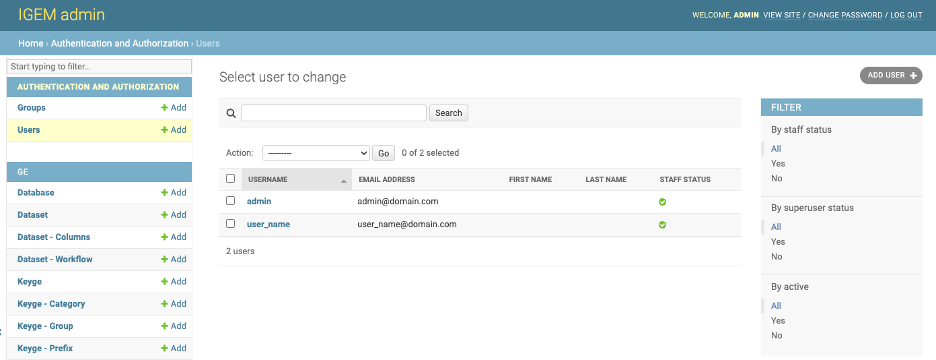
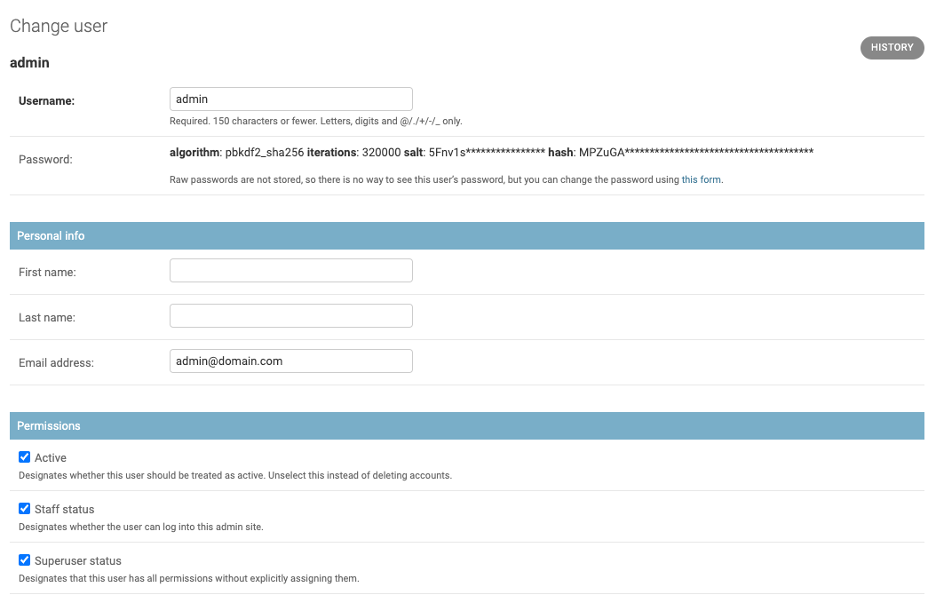
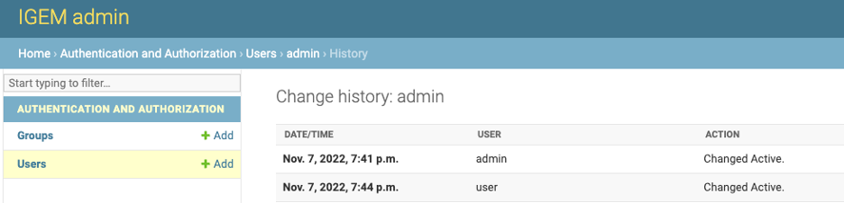
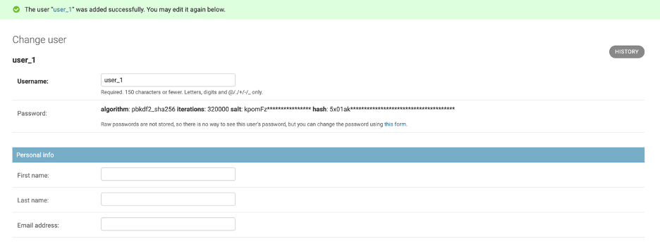
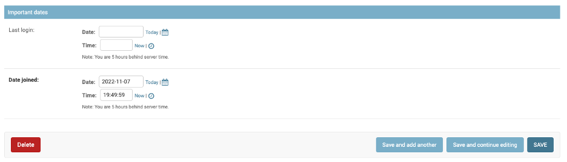
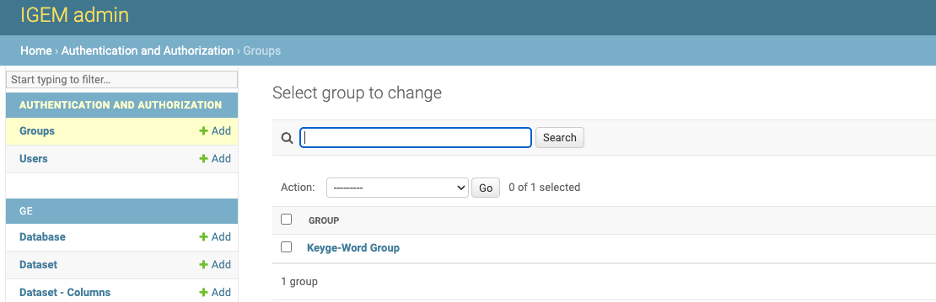
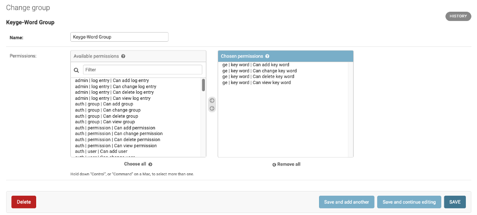
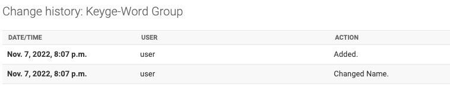

Users and Role
The IGEM system was developed to be flexible, and it is necessary to evaluate the best configuration for the scenario and objectives of each installation. A suggestion would be a model of three functions, being:
Administrator: responsible for installing and updating the environment to receive the IGEM, Customizing the IGEM, configuring the database and monitoring the performance and creating and maintaining users.
Super User: responsible for registering master data such as Database, Dataset, Keyge, among others. He will also be responsible for creating the ETL JOBs and monitoring them via workflow. For this group, we will have access to the WEB interface for parameterization of the registration, the necessary tables, access to processes such as Collect, Prepare, and DB
Users: they will be the clients of the system, performing queries and analysis of the IGEM data. For this group, we will have processes such as GE.filter
Users
New users can be created via command line:
$ python manage.py createsuperuser
Through IGEM’s friendly web interface, it will be possible to carry out Users management activities.
Activate the IGEM web service if you have not already done so. Go to the /src/ folder and type the command line:
$ python manage.py runserver
>>> Watching for file changes with StatReloader
Performing system checks...
System check identified no issues (0 silenced).
March 24, 2023 - 12:56:26
Django version 4.1.5, using settings 'src.settings'
Starting development server at http://127.0.0.1:8000/
Quit the server with CONTROL-C.
If it returns a port error, you can specify a different port:
$ python manage.py runserver 8080
Access the address in the link provided in Starting development server. Significantly, this address may vary depending on the initial settings performed during installation.
After user authentication and on the initial administration screen, select an option Users.

On the User screen, we will have options to consult, modify, add and eliminate Users.
On the first screen, we have a view of all available Users. To consult, click a desired User.
- On the next screen, we have all the Users fields open for modifications. To modify, change the desired information and select one of the three button options:
Save and add another: Will save the changes and open a blank User screen to add a new User record.Save and Continue editing: Will save the changes and continue on the User screen.Save: Will save the changes and return to the screen with the list of User.
In the History button, we can consult all the modifications carried out in the User, this function will be important to track modifications and audit the process.
The DELETE button will permanently delete the User record.
Caution: when deleting a User, the system will also delete all records dependent on that User.
Deletion can also be performed en bloc. On the Users List screen, select all the User you want to delete, choose the Delete Selected User action and click on the GO button.
Be careful, this elimination operation will be definitive for the User and for all other records dependent on it, as already explained.
- For the User, we will have two filter locations:
First located at the top of the User List screen where we can search broadly.
Second on the right sidebar, being able to select by status and actives.
- To add new User, we will have three different ways:
by the
+ Addbutton on the left sidebar.Through the
ADD USER +button in the right field of the Users list.Via the
Save and add anotherbutton located within a User record.
After entering the username, and password and saving, the system will be directed to the user details page.
Inform the personal data of the first name, last name, and email address.
- Under permissions, check:
Active Box to allow user activities.
Staff to allow the user to access the administration page
Superuser to give access to all data and system registration. If this option is not checked, it will be necessary to manually add which records and functions the user will have access to or add a group so that the user can access the system.
In groups, inform which groups the user will inherit the accesses to. For Super User, it will not be necessary to advertise any groups as they are given full access.
If you want to customize the user or add more system functionality and access options, access the user’s permissions type.
In user date, we will have how much was the last access and the date when the user was created.
After performing the new parameterizations, save the new user
Group
The groups help maintain access; we can create groups for different functions and assign them to the users who perform them, thus avoiding giving users undue access.
Celect an option Groups.
On the Groups screen, we will have options to consult, modify, add and eliminate Groups.
On the first screen, we have a view of all available Groups. To consult, click a desired Group.
- On the next screen, we have all the Group fields open for modifications. To modify, change the desired information and select one of the three button options:
Save and add another: Will save the changes and open a blank User screen to add a new Group record.Save and Continue editing: Will save the changes and continue on the Group screen.Save: Will save the changes and return to the screen with the list of Groups.
In the History button, we can consult all the modifications carried out in the Group, this function will be important to track modifications and audit the process.
The DELETE button will permanently delete the Group record.
Caution: when deleting a Group, the system will also delete all records dependent on that Group.
Deletion can also be performed en bloc. On the Users Group screen, select all the Group you want to delete, choose the Delete Selected Group action and click on the GO button.
Be careful, this elimination operation will be definitive for the Group and for all other records dependent on it, as already explained.
- For the Group, we will have on filter locations:
Located at the top of the Group List screen where we can search broadly.
- To add new Group, we will have three different ways:
by the
+ Addbutton on the left sidebar.Through the
ADD GROUP +button in the right field of the Group list.Via the
Save and add anotherbutton located within a Group record.
After entering the username, and password and saving, the system will be directed to the user details page.
A group combines different table accesses and access types. select the tables, type by the functional relationship on the left, and click the arrow to take to the box on the right. All combinations added in the correct box will be assigned to users who inherit this access group.
After performing the new parameterizations, save the new Group.